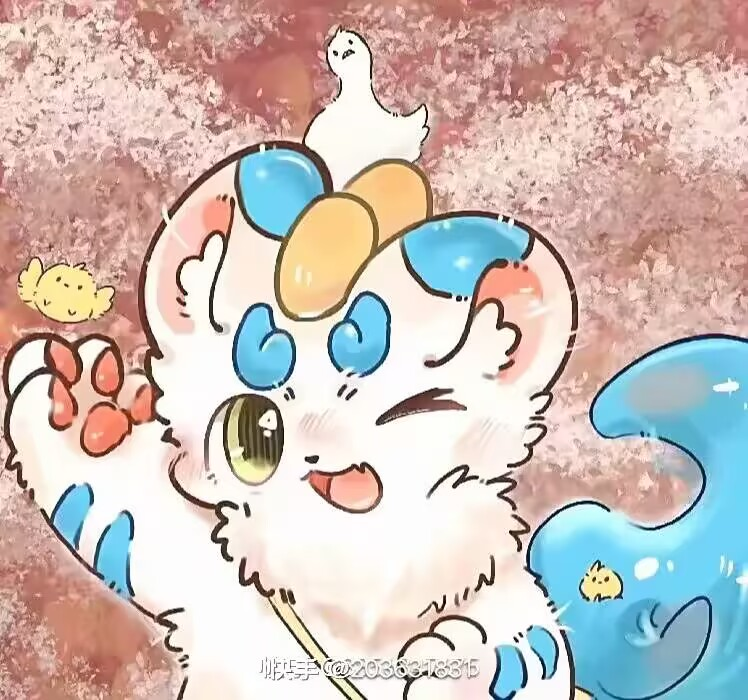
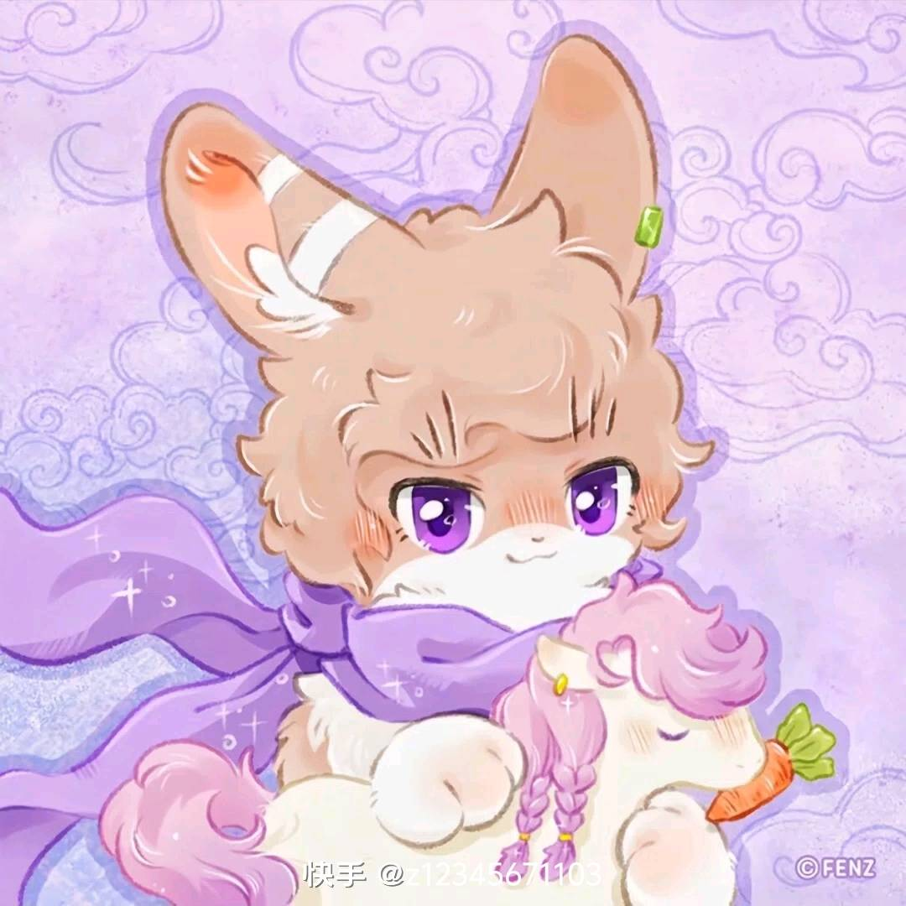
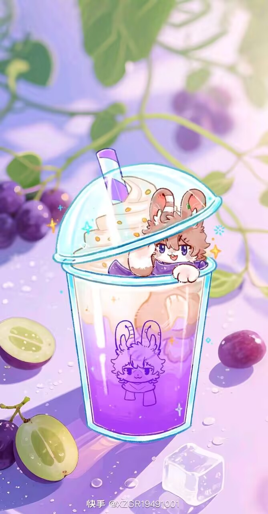
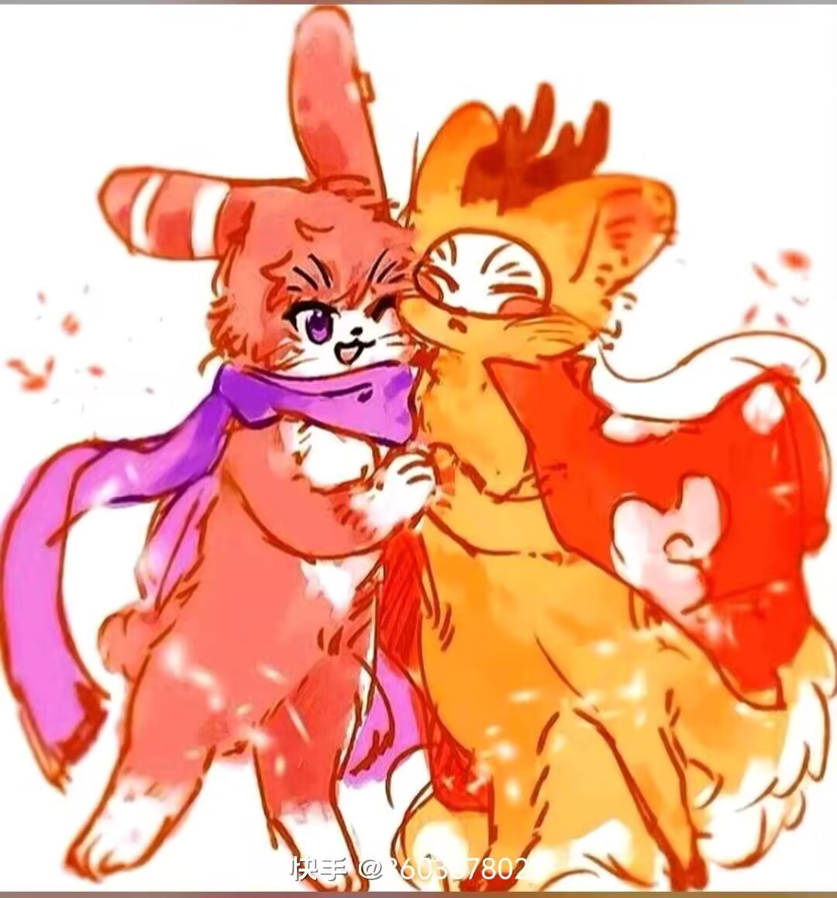
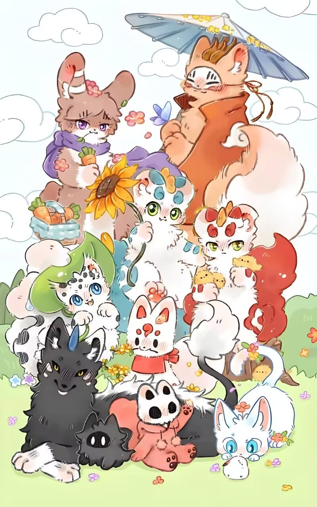

皮皮：店里最忙的那只貔貅
皮皮是一只蓝色的貔貅，也是鹿人店里最容易把事情变热闹的家伙。 他爱吃、爱玩，精力好得很，今天还在店里，下一刻可能已经跑到山那边去了。 我跟他相处久了，已经学会先把重要的东西收好，再问他又闯了什么祸。
不过，皮皮也有皮皮的可爱。他会把好吃的分一点出来， 也会在大家需要的时候凑过来。店里有他，确实很难安静， 可要是突然安静下来，反而会让人觉得少了点什么。
皮皮负责把店里变热闹，兔爷负责把被打乱的日常重新整理好。
THE MOON PALACE RABBIT
来自月宫的兔子 · 鹿人店的理发师
我原本住在月宫，做着捣药、做月饼之类的工作。 人间闹瘟疫的时候，我主动请命下凡，为人类去病消灾。 后来我在地球上生活了很多年，也见过热闹的北京和安静的深山， 最后在鹿人店找到了一个可以坐下来喝茶、替大家理发的地方。
“老夫老妻。”↓看看我从哪里来

A RABBIT FROM THE MOON
我是月宫里的兔子，曾经也有过自己的生活和烦恼。 月宫的日子并不坏，只是每天重复同样的事情，久了难免想知道月亮下面的人间是什么样子。 所以后来，我来了地球，也在这里慢慢找到了新的方向。

FROM THE MOON TO THE MOUNTAIN
月宫里有月桂、有玉兔，也有做不完的药和月饼。人间闹瘟疫的时候， 我便主动请命下凡，去为人类去病消灾。那是我第一次真正走到月亮下面， 也第一次知道，地上的日子和月宫很不一样。
后来我在北京生活，追过潮流，也有过一段感情。再后来，四不像离开潘家园， 去了云南深山开鹿人店。我留在北京一阵子，最后还是收拾东西追了过去。 兔洞是我自己挖的，鹿人店是我愿意留下来的地方。
从月宫到北京，再到云南，兔爷终于在鹿人店留下来。
MY LIFE AT DEER PEOPLE SHOP
我跟着四不像来到鹿人店，并不是因为这里有多豪华。 是因为他在这里，而这里也确实有一群值得留下来的家伙。

四不像负责经营和照顾神兽，我则在旁边帮忙。 皮皮闹起来的时候，我们一起追；有客人上门的时候，我们一起招呼。 有时候店里乱得像刚打过一仗，可等大家坐下来吃点东西， 那些小麻烦也就变成了可以拿来笑的日常。
THE PEOPLE AROUND ME
这里的伙伴不一定每天都安安静静，但总会在饭点聚到一起。 我们各自有各自的来处，也一起把鹿人店过成了一个热闹的家。

皮皮是一只蓝色的貔貅，也是鹿人店里最容易把事情变热闹的家伙。 他爱吃、爱玩，精力好得很，今天还在店里，下一刻可能已经跑到山那边去了。 我跟他相处久了，已经学会先把重要的东西收好，再问他又闯了什么祸。
不过，皮皮也有皮皮的可爱。他会把好吃的分一点出来， 也会在大家需要的时候凑过来。店里有他，确实很难安静， 可要是突然安静下来，反而会让人觉得少了点什么。
皮皮负责把店里变热闹，兔爷负责把被打乱的日常重新整理好。

鹿人店里来来去去的神兽很多，有的来找我帮忙，有的来借住几天， 还有的来了以后就不太想走。四不像总说店里麻烦已经够多了， 可每次真有谁遇到事情，他还是会认真想办法。
我就在旁边给大家理理毛、剪剪头发，顺便听他们讲各自的故事。 有时候是皮皮和谁抢吃的，有时候是店里的客人把屋顶撞了个洞； 修好以后，我们照样会坐在一起吃饭。这样的生活不算清闲， 却比一个人待在月宫里热闹多了。
理发、吃饭、追皮皮，都是鹿人店平常又快乐的日子。
A NEW HOME UNDER THE MOON
我从月宫来到人间，原本只是想做一件有用的事。 后来遇见四不像，遇见皮皮，也遇见了鹿人店里一群吵吵闹闹的伙伴。 现在的我有工作、有兔洞，还有明天可以继续理的头发——这样就很好。
← 回到山海间